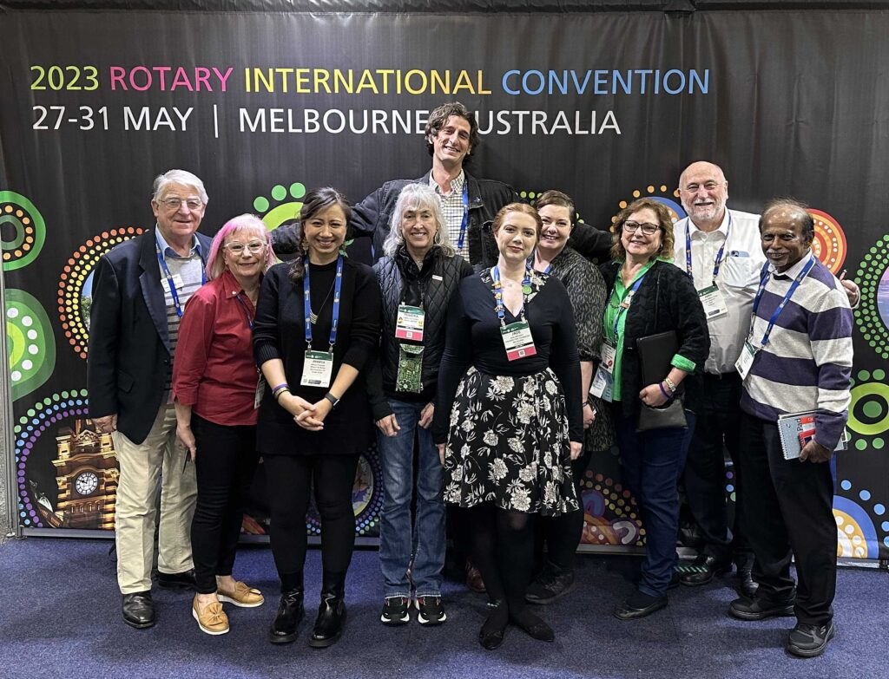
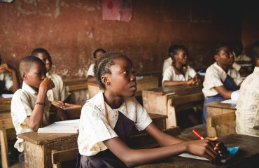
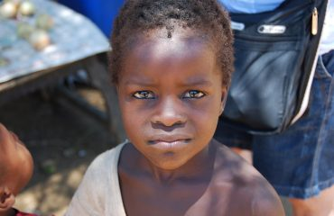
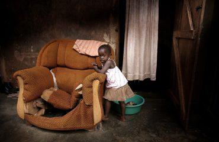

Home / About us
Our booth in the House of Friendship was one of the most colourful and perhaps the busiest. We met many old friends and made many new ones.
We heard so many amazing stories about Rotary’s impact on healthcare in different parts of the world. It never ceases to surprise me that there are hundreds of health programmes initiated by Rotarians, many changing lives. Rotarians invest countless voluntary hours setting up health camps, offering free treatment, transporting medications, and donating medical equipment.
Each programme makes a difference to people’s lives but how do we measure and quantify our impact, how do we acknowledge the heroes who provide such service? At present we also do not have a way of sharing our experiences and learning from each other. Valuable lessons learned are lost in the mist of time.

If you are involved in a health programme please share information about your work with other like-minded people. We would like to create an open directory of contacts and health programmes so that we could support each other
An important contact we made in Melbourne was with a group of NGOs involved in health programmes (photo).
We met together and shared our experiences. It was clear that we all had a common vision to reach out to those with limited access to healthcare. We acknowledged that by staying connected we could learn from each other.
As a first step we decided to create a Directory of Healthcare programmes in which NGOs and Rotary groups are involved.
Are you a Rotarian involved in a health programme? CLICK HERE
NGOs involved in a health programmes please CLICK HERE
Our current focus is on supplying Kangaroo Mother Care wraps to a number of maternity hospitals.
KMC includes keeping small (preterm) babies skin-to-skin with their mother (or another family member). Studies of KMC report increased survival, decreased infection, improved nutrition and growth and possible improved development.
We have also supplied 10,000 small, knitted hats to complement KMC. Such hats for new-born babies may be life- saving. Their heads are relatively larger than bodies compared to older children and adults and a large source of potentially risky heat loss.
Many children have been killed or injured, many have lost parents and siblings, their homes, schools and playgrounds. We have been told that some have been kidnapped and trafficked. No child should ever have to bear that kind of suffering. They need mental and physical support urgently.
Our support has been possible due the generosity of Rotarians and non-Rotarians to all of them we say – thank you.
The Fellowship was actively involved in relief efforts in Great Britain and Ireland
‘It’s impossible for you to hear each “thank you” from the doctors but on behalf of them I can say that you are a part of big important project and we value it a lot!’
As an international group of healthcare professionals, we stand ready to help our colleagues in Ukraine to emerge from the current dark times into a bright future with a modern and compassionate health service.



Education is our top priority. Find out how can you contribute.
We plan to increase the number of food that we are providing from 11k to 20k.
We are accepting second-hand clothes in good shape or money donation.
Each donations matter, even the smallest ones. Donate $2( average price of coffee in the USA) and someone’s life will get better!